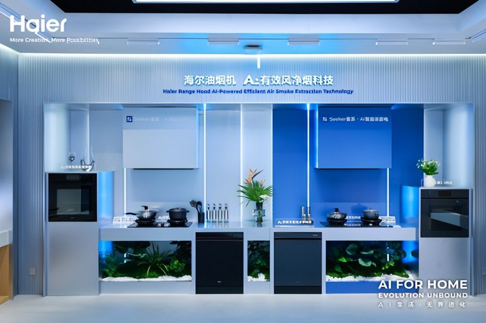

1
厨房智能硬件 · 竞品动态
海尔 Seeker 套系：AI之眼2.0把灶具、烟机、洗碗机拉成一套自主厨房
海尔厨电称，上半年厨电产业营收同比增长 10.8%，并把增长解释为 AI 场景方案的结果。

海尔官网文章提到，Seeker 套系把燃气灶、烟机、洗碗机、蒸烤箱等设备纳入协同链路：灶具的 AI之眼2.0 可识别锅内状态，溢锅前主动调小火；烟机用 AI 增压芯片感知烟道压力；洗碗机根据油污程度匹配洗涤方案。
这条新闻不是 8 月 31 日当天发布，时效性做了扣分；但它对“未来厨房”非常直接：竞品正在把单品智能包装成成套解决方案，卖点从参数、颜值，进一步转向“设备帮用户少操心”。
小编有话说智能厨电下一阶段会少谈“我能联网”，多谈“我能不能替你看火、判断油烟、识别油污、协调设备”。这类能力一旦稳定，就会变成用户能感知的厨房减负。